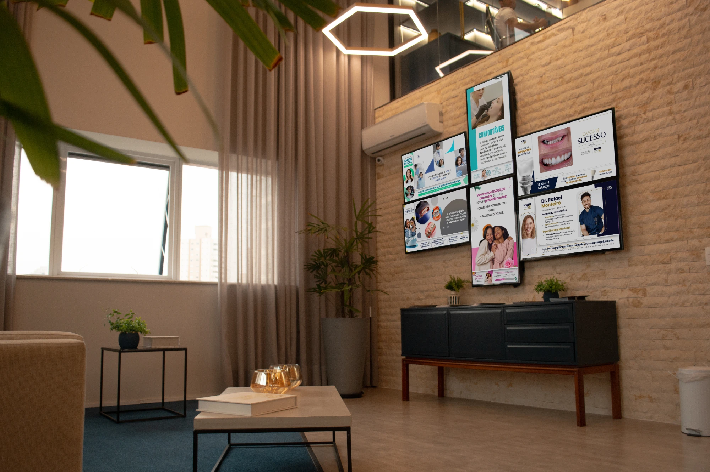
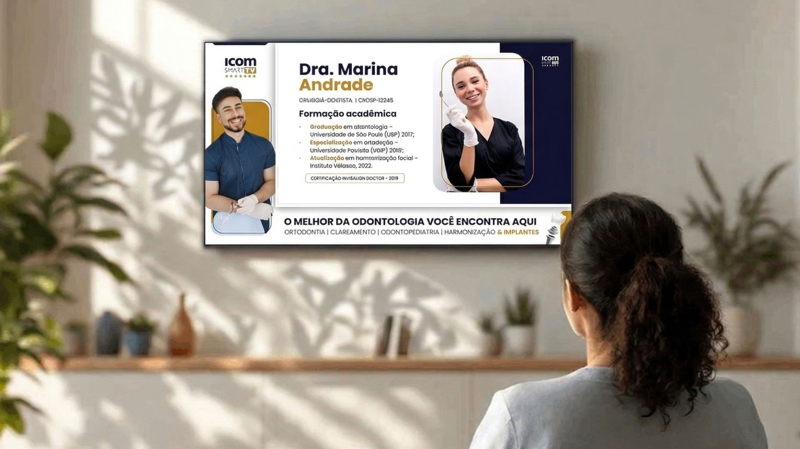
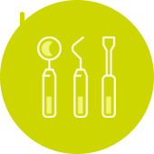

Comunicação
Conteúdo profissional na sala de espera, que informa, educa e aproxima o paciente da clínica.
A IcomTV, que já está na sala de espera de mais de 2.000 clínicas, se uniu à Turma do Bem, a maior rede de voluntariado especializado do mundo. Parte das vendas da IcomTV é destinada às causas que devolvem sorrisos a jovens e mulheres em situação de vulnerabilidade.


A IcomTV transforma a sala de espera em um canal de comunicação com o paciente. A Turma do Bem transforma vidas por meio da saúde bucal. Unimos as duas missões: a mesma tela que fortalece a marca da sua clínica passa a mostrar — e a apoiar — quem mais precisa de um sorriso.
Conteúdo profissional na sala de espera, que informa, educa e aproxima o paciente da clínica.
Tratamento odontológico gratuito para jovens e mulheres que não teriam como pagar.
Sua sala de espera ganha uma causa para mostrar aos pacientes — e ajuda a mantê-la viva.
“Todos os dias, milhões de pacientes olham para as nossas telas enquanto esperam. Decidimos que esse olhar pode ir além: cada clínica IcomTV ajuda a Turma do Bem a devolver um sorriso a quem foi esquecido.”
— Manifesto da parceria IcomTV + Turma do BemA Turma do Bem conecta dentistas voluntários a quem não tem condições de pagar pelo tratamento. Parte das vendas da IcomTV ajuda a manter esses programas funcionando.
 90 mil+ jovens atendidos
90 mil+ jovens atendidos
O principal programa da Turma do Bem: tratamento odontológico gratuito para jovens de 11 a 17 anos em vulnerabilidade social, independente da complexidade do caso, até os 18 anos.
Tratamento odontológico gratuito para mulheres cis e trans que vivenciaram situações de violência e tiveram a dentição afetada pelas agressões.

18 mil+ dentistas voluntáriosA maior rede de voluntariado especializado do mundo, presente em todo o Brasil. Muitos desses dentistas atendem em clínicas como a sua.
A sala de espera é um dos poucos momentos em que o paciente está atento, sem pressa e dentro da sua clínica. A IcomTV já usa esse tempo para informar, educar e fortalecer a sua marca.
Com a parceria, essa tela também conta a história da Turma do Bem. O paciente vê que a clínica dele cuida além do consultório.
Os programas da Turma do Bem aparecem na TV da sua recepção, junto da programação da clínica.
Seu paciente vê que a clínica faz parte da rede IcomTV + Turma do Bem.
Informação de qualidade sobre cuidado com o sorriso, para quem está ali e para quem ainda não tem acesso.
Clínicas que apoiam uma causa são lembradas, recomendadas e escolhidas.
Você não precisa organizar doações nem lembrar de nada. A parceria faz o caminho inteiro — do olhar do seu paciente até o tratamento de quem a Turma do Bem atende.
A IcomTV leva a programação para a TV da sua sala de espera.
IcomTVEnquanto espera, conhece a sua clínica e a causa que ela apoia.
IcomTVParte das vendas da IcomTV é destinada à Turma do Bem.
IcomTV + Turma do BemOs programas da Turma do Bem levam tratamento gratuito a jovens e mulheres que não teriam como pagar.
Turma do BemSeja você cliente IcomTV, uma nova clínica ou um Dentista do Bem, a sua sala de espera pode levar a parceria adiante.
Leve a parceria para a TV que já está na sua recepção e mostre aos pacientes que sua clínica apoia a Turma do Bem.
Transforme a sua sala de espera com a IcomTV e entre na rede do bem desde o primeiro dia.
Você já transforma sorrisos como voluntário. Mostre isso aos seus pacientes, direto na sala de espera.
Comunicação com causa Cada clínica da rede IcomTV ajuda a Turma do Bem a devolver sorrisos a quem mais precisa.
A mesma tela que informa o seu paciente passa a mostrar que a sua clínica faz parte de algo maior.
Conteúdos da Turma do Bem integrados à programação da sua sala de espera.
Sua clínica identificada como parte da rede IcomTV + Turma do Bem.
Informação que educa o paciente e valoriza o cuidado com o sorriso.
Parte das vendas da IcomTV é destinada aos programas da Turma do Bem.
Preencha o formulário. Um consultor IcomTV fala com você pelo WhatsApp.
Entendemos a sua clínica, a sua sala de espera e a sua relação com a Turma do Bem.
A programação com a parceria entra no ar na TV da sua recepção.
Seu paciente conhece a causa, e parte das vendas segue para a Turma do Bem.
Preencha seus dados e um consultor IcomTV entra em contato pelo WhatsApp para apresentar a parceria com a Turma do Bem e como a sua clínica pode participar.
Em breve um consultor IcomTV vai falar com você. Se preferir, adiante a conversa agora:
Continuar no WhatsAppAinda ficou alguma pergunta? Fale com o consultor depois de preencher o formulário.
Parte das vendas da IcomTV é destinada à Turma do Bem para apoiar seus programas. A sua clínica não precisa fazer nenhuma doação separada.
Sim. Preencha o formulário marcando “Já sou cliente IcomTV” e o consultor explica como levar a parceria para a TV da sua recepção.
Não. Qualquer clínica ou consultório pode participar e apoiar a causa. Se você já é Dentista do Bem, conte no formulário — é ótimo saber!
Conteúdos sobre a Turma do Bem e seus programas, exibidos junto da programação da sua clínica na sala de espera.
Sim. A IcomTV envia um equipamento que você conecta na entrada HDMI da sua televisão, smart ou não. A instalação é simples e o suporte acompanha você até tudo estar funcionando.
É uma organização social que reúne a maior rede de voluntariado especializado do mundo: dentistas que atendem gratuitamente jovens e mulheres em situação de vulnerabilidade. Saiba mais em turmadobem.org.br.